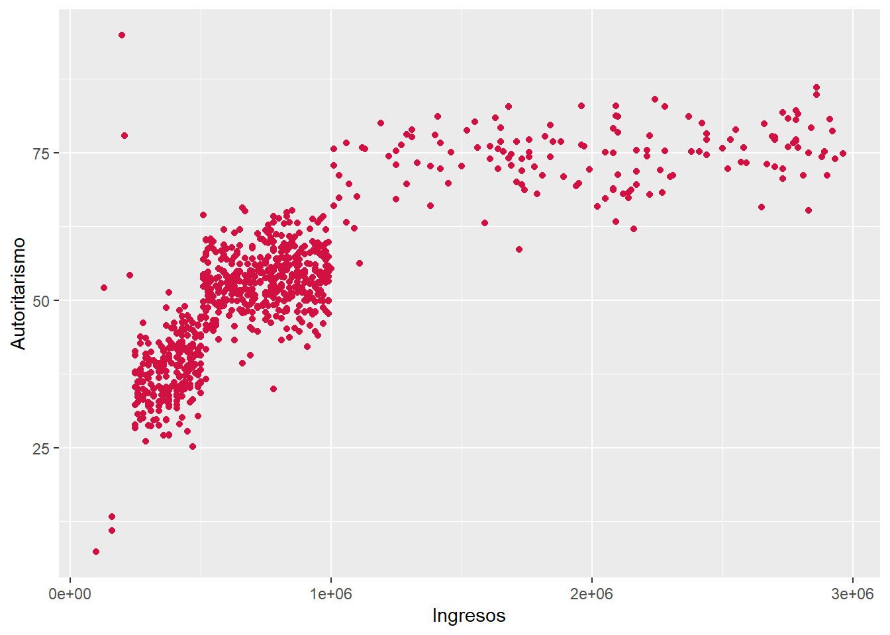

# librerías
pacman::p_load(dplyr, sjPlot, sjmisc)
# cargar datos
load(url("https://github.com/cursos-metodos-facso/datos-ejemplos/raw/refs/heads/main/dataset1.RData"))Paso previo
Pregunta 1
En qué medida se relacionan los ingresos en pesos de las personas con sus niveles de autoritarismo.
1.1. Estime la correlación entre ambas variables
- genere un diagrama de dispersión nube de puntos scatterplot.
Código para estimar la correlación:
# estimamos correlación
cor.test(dataset1$ingresos, dataset1$autoritarismo, complete.obs = TRUE, method = "pearson")
Pearson's product-moment correlation
data: dataset1$ingresos and dataset1$autoritarismo
t = 39.93, df = 839, p-value < 2.2e-16
alternative hypothesis: true correlation is not equal to 0
95 percent confidence interval:
0.7847979 0.8315542
sample estimates:
cor
0.8094554 Código para estimar el gráfico:
# graficamos
sjPlot::plot_scatter(data = dataset1, x = ingresos, y = autoritarismo)
1.2. Justifique la elección del coeficiente de correlación seleccionado e interprete:
el resultado considerando inferencia estadística.
magnitud y sentido del efecto
Según la pauta:
Justificación: Se empleó el coeficiente de correlación de Pearson debido a la naturaleza de las variables, en tanto ingresos y autoritarismo corresponden a variables númericas de razón.
Interpretación: El coeficiente da cuenta de una relacion positiva y grande, siguiendo los criterios de Cohen (1988) ( = 0.80). Es decir, a medida que aumentan los ingresos de las personas, también aumentan sus niveles de autoritarismo.
Significancia estadística: La relación es estadísticamente significativa (< 0.001), por ende es posible rechazar sobre no asociación entre variables, entregando evidencia a favor de una relación entre ambas variables con un 99.9% de confianza.
Tu respuesta:
Se emplea coeficiente correlación de Pearson, dado que son ambas variables son númericas. La correlación entre la vairable ingresos y la variable autoritarismo nos da como resultado un coeficiente de 0.8, lo cual nos indica una correlación positiva de gran magnitud.
Pregunta 2
Cómo se relacionan el nivel educacional autoritarismo y los ingresos
2.1. Estime y reporte la matriz de correlaciones de las variables
- Nivel educacional, autoritarismo y los ingresos
# creamos la matriz a partir de un objeto
cormat <- dataset1 %>% # indicamos la base de datos
dplyr::select(educ_rec, autoritarismo, ingresos) # seleccionamos las variables que queremos incluir en la matriz
# estimamos la tabla
sjPlot::tab_corr(cormat,
na.deletion = "pairwise", # especificamos tratamiento NA
triangle = "lower")| Nivel educacinal recodificado (universitario o no) |
Autoritarismo | Ingresos | |
| Nivel educacinal recodificado (universitario o no) |
|||
| Autoritarismo | -0.037 | ||
| Ingresos | -0.030 | 0.809*** | |
| Computed correlation used pearson-method with pairwise-deletion. | |||
2.2a. Qué correlaciones de la matriz son estadísticamente significativas
2.2b. Qué decisión tomó sobre los casos perdidos en el cálculo de la matriz
Pairwaise: La correlación de Pearson entre ingresos y autoritarismo es positiva, estadísticamente significativa (r = 0.809, p < 0.001) y fuerte según los criteriores de Cohen (1988).
Listwise: La correlación de Pearson entre ingresos y autoritarismo es positiva, estadísticamente significativa (r = 0.809, p < 0.001) y fuerte según los criteriores de Cohen (1988).
2.2c ¿Cómo se denomina el tipo de correlación que se calcula entre nivel educacional e ingreso?
La correlación entre la variable dummy nivel educacional (0="No universitaria"; 1="Universitaria o más") y la variable continúa ingresos se denomina correlación punto biserial.
Pregunta 3
Cómo se relaciona el nivel educacional con los ingresos
3.1. Reporte tabla de contigencia y el cálculo de Chi2
# cargamos paquete necesario
pacman::p_load(sjPlot)
# estimamos tabla de contingencia
dataset1 %>%
sjtab(educ_rec,
ingresos_rec)| Nivel educacinal recodificado (universitario o no) |
Ingresos recodificado |
Total | ||
|---|---|---|---|---|
| Bajos ingresos | Medios ingresos | Altos ingresos | ||
| No universitaria | 162 | 262 | 103 | 527 |
| Universitaria o más | 92 | 180 | 51 | 323 |
| Total | 254 | 442 | 154 | 850 |
| χ2=3.292 · df=2 · Cramer's V=0.062 · p=0.193 | ||||
# calculamos chi2
chisq.test(dataset1$educ_rec, dataset1$ingresos_rec) # adicional, ya que el Chi2 aparece en sjtab
Pearson's Chi-squared test
data: dataset1$educ_rec and dataset1$ingresos_rec
X-squared = 3.2921, df = 2, p-value = 0.19283.2. Interprete el Chi2 en términos de inferencia y magnitud del efecto
Tenemos que:
- χ2=3.292 df=2 · Cramer’s V=0.062 · p=0.193
- chi2 critico es 5.99 (para alfa de 0.05 y 2 grado de libertad)
- chi2 estimado > chi2 critico
Interpretación:
Chi cuadrado no es estadísticamente significativo (p > 0.05)
Tamaño de efecto pequeño/débil según la V de Cramer